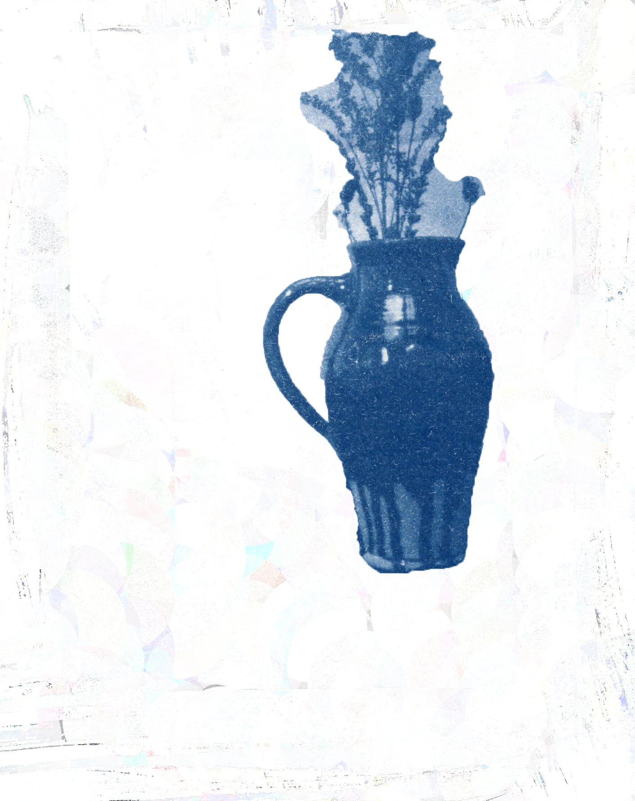
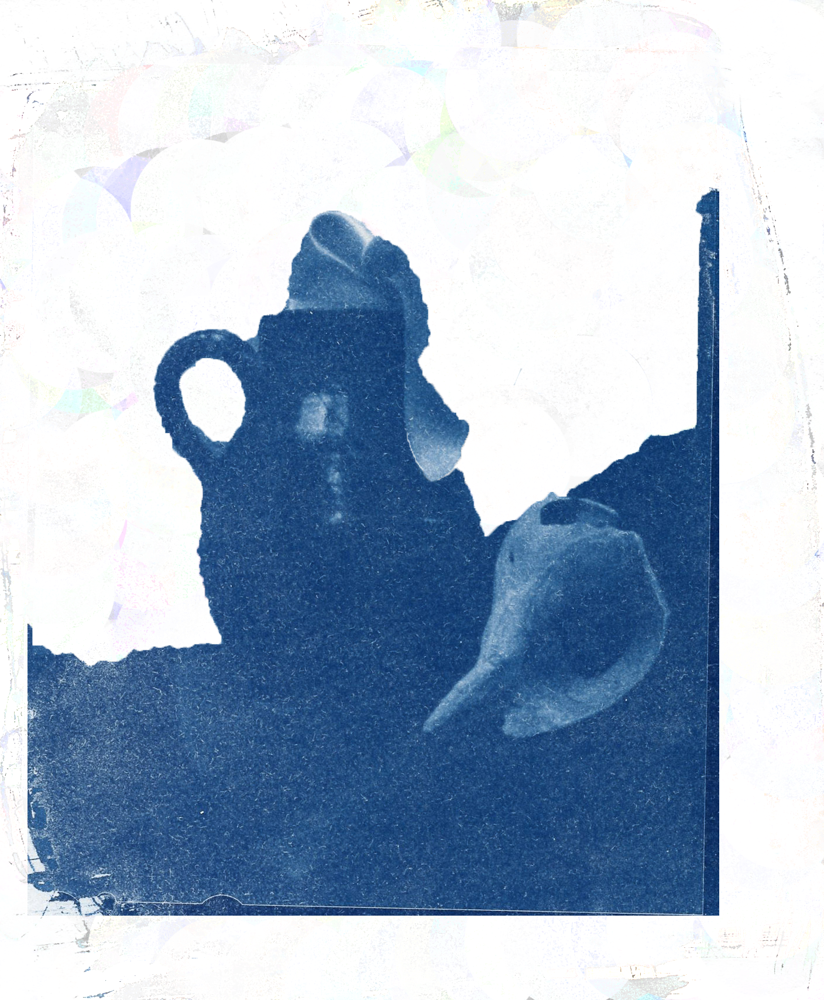
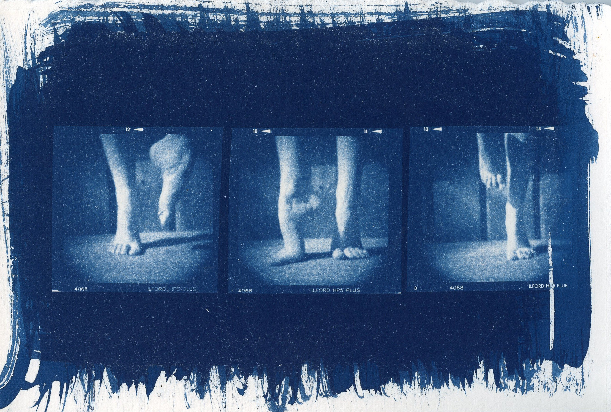
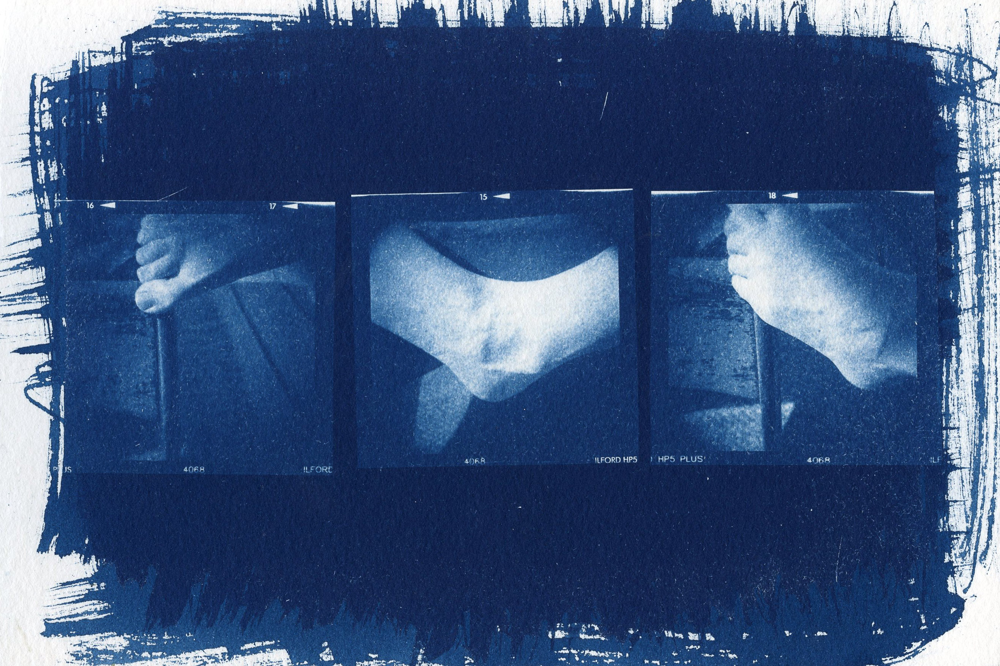
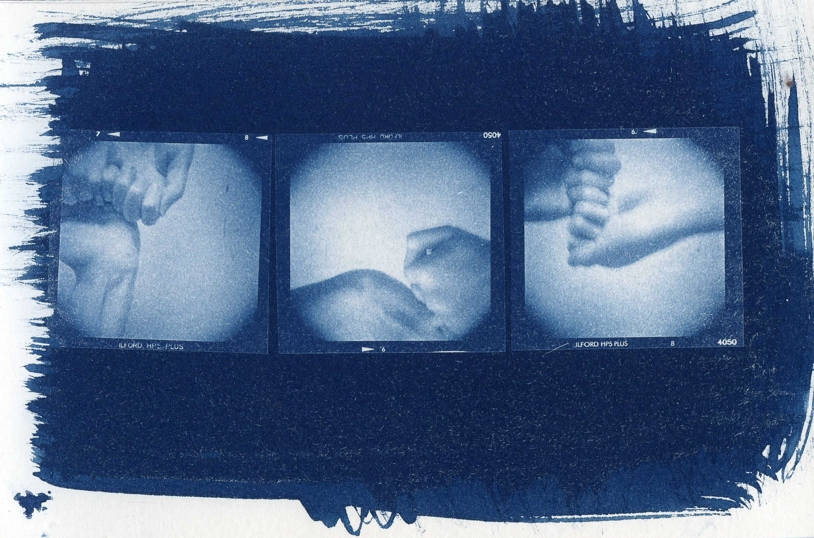
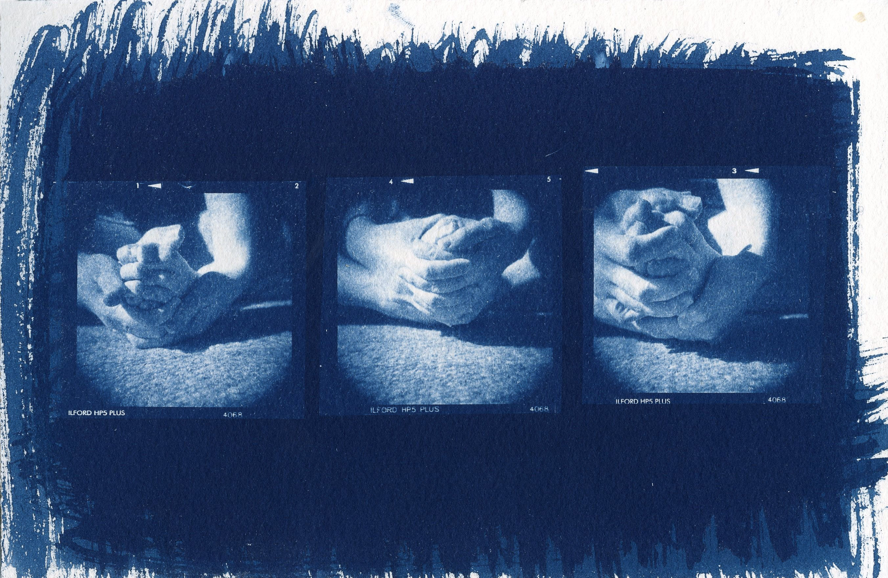
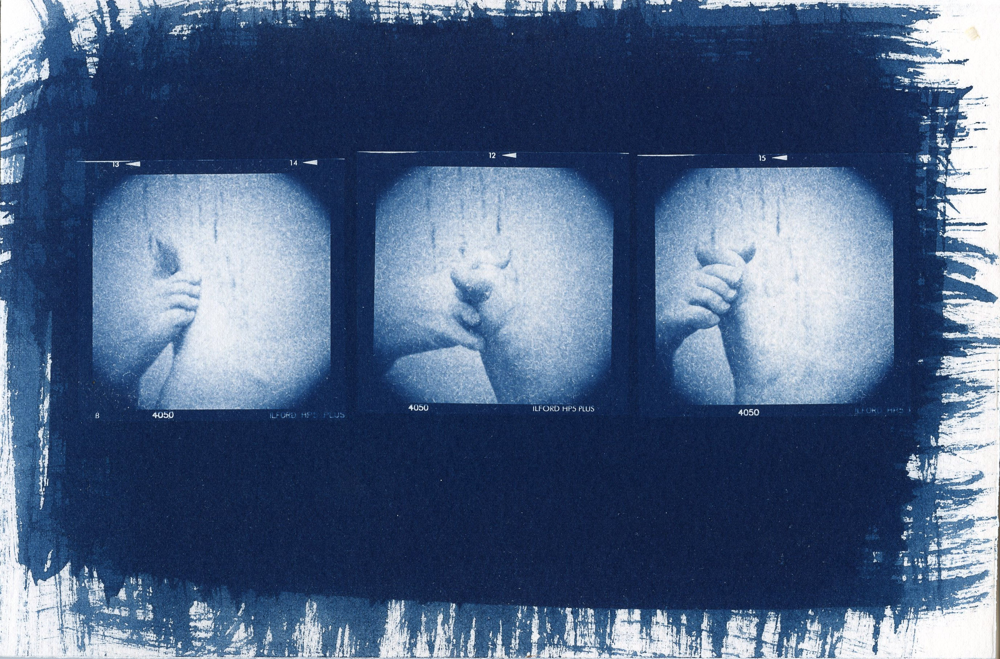
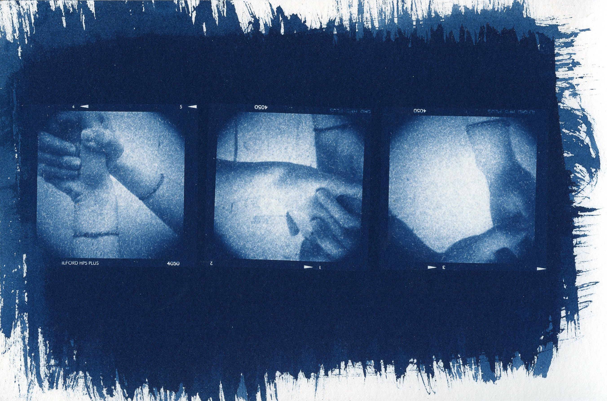

Beth Goss, A Ballad (2012), 9 in. x 6 in., Cyanotype light sensitizing on hotpress water color paper
Beth Goss, Die Bello (2012), 6 in. x 9 in., Cyanotype light sensitizing on hotpress water color paper

Beth Goss, Left to Fade (2012), 4 in. x 6 in., Cyanotype light sensitizing on hotpress water color paper
Beth Goss, schweigen (2012), 4 in. x 6 in., Cyanotype light sensitizing on hotpress water color paper

Beth Goss, Silk and Calcium (2012), 4 in. x 6 in., Cyanotype light sensitizing on hotpress water color paper
Beth Goss, What Not to Expect (2012), 6 in. x 9 in., Cyanotype light sensitizing on hotpress water color paper

Beth Goss, Sand Mat (2012), 9 in. x 6 in., Cyanotype light sensitizing on hotpress water color paper
Beth Goss, The Ankle (2012), 9 in. x 6 in., Cyanotype light sensitizing on hotpress water color paper
Beth Goss, Watcher in the Water (2012), 9 in. x 6 in., Cyanotype light sensitizing on hotpress water color paper
Beth Goss, Spontaneous Growth (2012), 9 in. x 6 in., Cyanotype light sensitizing on hotpress water color paper
Beth Goss, Positive, Negative: Birth (2012), 9 in. x 6 in., Cyanotype light sensitizing on hotpress water color paper
Beth Goss, Positive, Negative II: Distant (2012), 9 in. x 6 in., Cyanotype light sensitizing on hotpress water color paper
For more information about the work, you can e-mail the artist!
Top